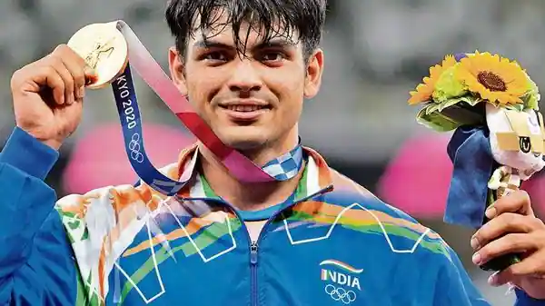
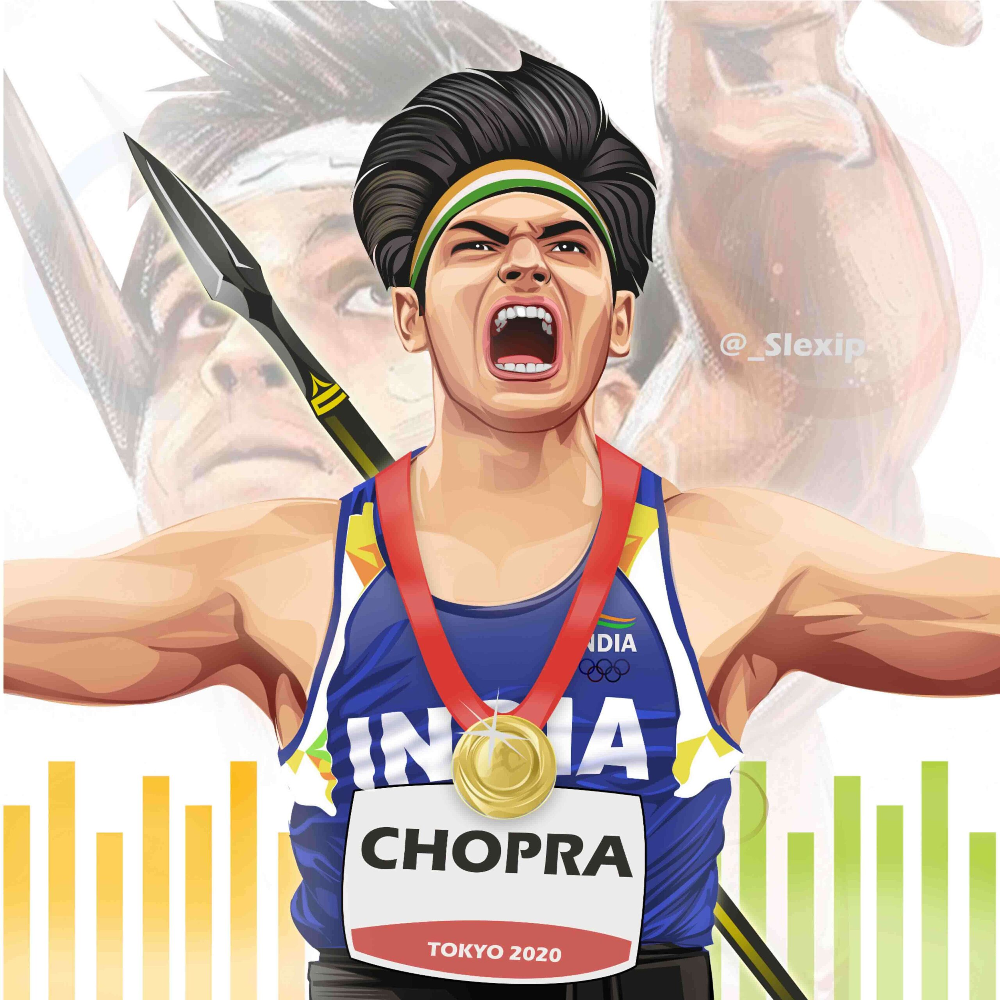

Subedar Neeraj Chopra VSM (born 24 December 1997) is an Indian track and field athlete who competes in the javelin throw. As of August 2021, he is ranked second internationally by World Athletics. A Junior Commissioned Officer (JCO) in the Indian Army, Chopra is the first track and field athlete to win a gold medal for India at the Olympics.He is also the first track and field athlete from India to win at the IAAF World U20 Championships, where in 2016 he achieved a world under-20 record throw of 86.48 m, becoming the first Indian athlete to set a world record.
Chopra participated in the 2018 Commonwealth Games and the 2018 Asian Games, serving as the flag-bearer in the latter and winning gold medals in both. In his debut at the 2020 Tokyo Olympics, Chopra won the gold medal on 7 August 2021 with a throw of 87.58 m in his second attempt. As of 2021, he is one of only two Indians to have won an individual Olympic gold medal (the other being Abhinav Bindra), as well as the youngest-ever Indian Olympic gold medalist in an individual event and the only one to have won gold in his Olympic debut.
|

|
 |
On August 7, 2021, Neeraj Chopra emerged as India's first track-and-field Olympic gold-medallist. He gave his best throw of 87.58m in his second attempt to clinch the gold medal for India at Tokyo Olympic Games. He is now the second Indian after Abhinav Bindra to win a gold medal in individual events. He was qualified for the Tokyo Olympics with a throw of 87.86m at the ACNE League. He breached the Olympic qualification mark of 85m in his fourth attempt and secured the top place at the international event. He threw the spear to 81.76m in the beginning and improved after every throw. He could manage a throw of 82m in his second attempt and 82.57 in the third. |